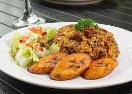
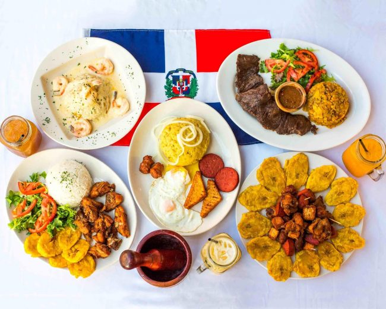
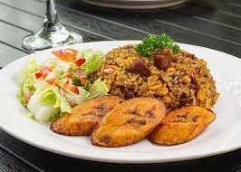
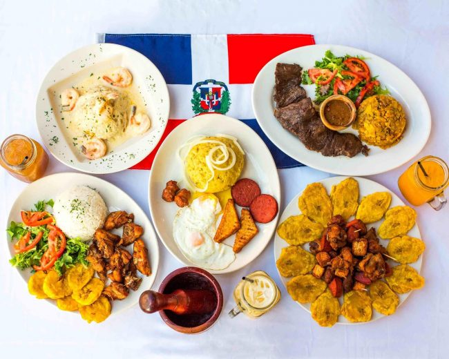

I am an international student from the Dominican Republic.
I major in Marketing with a minor in Internet Communications.
I really hope to learn how to use this program so that I don't fail the class, lol.
Here are some pictures of the island where i come from
 

Go to Second Page"


Go to Second Page"
Dominican's gastronomy is lively and flavorful
| Breakfast | Lunch | Dinner |
|---|---|---|
| Tres Golpes | Rice, Stew chicken | smashed potatoes, friend eggs & salami |
| Sancocho | Fried plantains with salami | |
| Guandules, white rice, stew beef | Mangu with any meat |